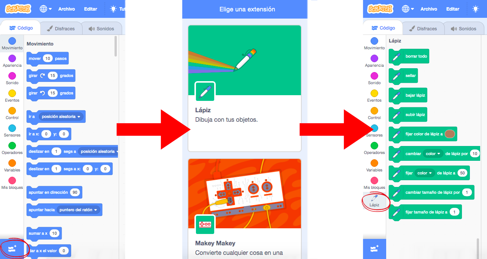
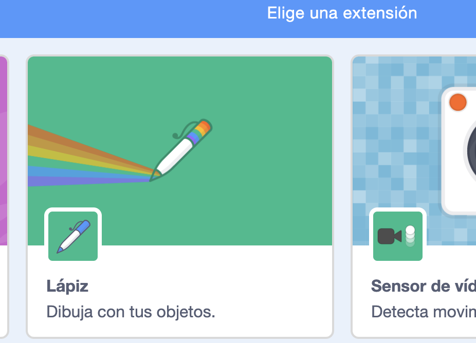
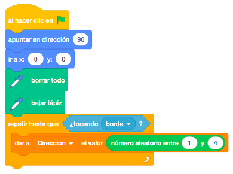
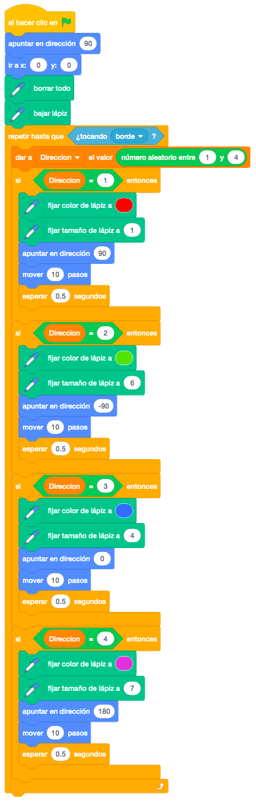

Seleccionamos un personaje de la biblioteca del Scratch.
No necesitamos ningún escenario.
El juego consiste en que el personaje elegido se moverá por la pantalla pintando su rastro aleatoriamente y
con distinto grosor y color dependiendo de la dirección.
La dirección se establece en base a una variable que recibe el valor aleatoriamente.
Se tiene que añadir la extensión "Lápiz".
En cada dirección en la que se mueve el gato cambiaremos el estilo del lápiz.
El gato se mueve de forma completamente aleatoria.
Cuando el gato toque el borde, parará de moverse.
Utilizaremos los bloques de Lápiz. Para añadirlos a nuestros bloques de código, iremos a la esquina
inferior izquierda de la pantalla y pincharemos en el bloque azul de añadir extensión. Aparecerá una
pantalla con todas las extensiones posibles.
Pincharemos en "Lápiz" y seguidamente aparecerá el nuevo grupo de bloques en la pantalla principal de
Scratch.

Nota: De esta forma podemos añadir cualquiera de las extensiones de Scratch
Lo primero que haremos será seleccionar el personaje que queramos y lo posicionamos en el centro del
escenario.
Lo orientaremos hacia la derecha y haremos un bucle que repetirá las instrucciones hasta que toque un borde.

Añadimos a nuestro código los bloques necesarios para empezar a pintar, que serán "Borrar Todo" para empezar
con la pantalla limpia, y "Bajar Lápiz" para empezar a pintar.
El objeto se moverá automáticamente hacia cualquier lado (derecha, izquierda, arriba o abajo). Para que esta
dirección sea aleatoria, elegiremos esta dirección mediante un "Número Aleatorio" entre 1 y 4 para darle un
valor a cada lado. Este valor lo guardaremos en una variable que podemos llamar "Dirección". Lo haremos
dentro del bucle ya que lo tiene que hacer antes de cada movimiento.

Nota: El nombre de las variables lo pondremos en relación al contenido que va a almacenar. Evitaremos los acentos ya que hay lenguajes de programación que no los admiten.
Recordar: El cálculo de la dirección aleatoria lo volveremos a utilizar en posteriores juegos.
Dependiendo del valor de la dirección, pintaremos en una dirección o en otra con un grosor distinto.
Añadiremos dos nuevos bloques de lápiz, "Fijar Color de Lápiz" para darle un color y "Fijar Tamaño del
Lápiz" para definir el grosor.
A continuación, apuntaremos en la dirección que nos indique la variable y moveremos pasos (para que se vea
bien el efecto, pondríamos 20 pasos).
Para ver bien el efecto de pintado, pondremos un bloque "Esperar".
El código definitivo quedará así.

Podemos optimizar el código de la parte que hacemos para cada dirección, sacando al final del bucle lo que se repite.
Y el juego quedaría así.
Para ver el juego terminado pulsa
aquí.
Para descargarte el juego terminado pulsa
aquí.